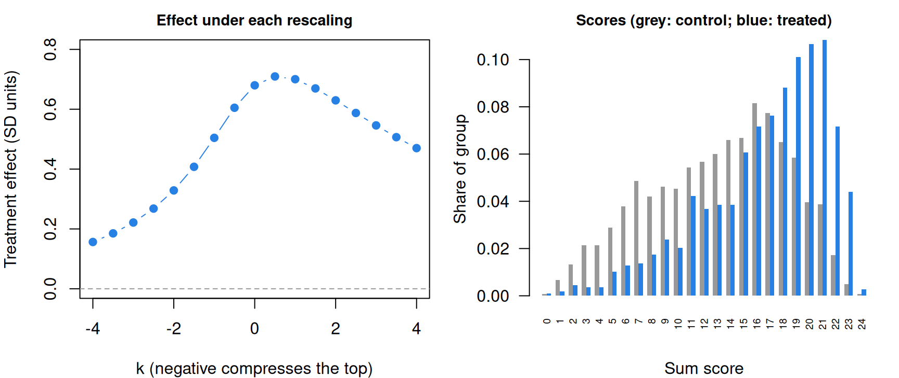

What is measurement?
What this is for
A vocabulary program for second graders raised scores on a 24-item test by about two-thirds of a standard deviation. Is that a fact about the children’s vocabulary, or partly a fact about how we chose to count points on the test? Every model in this course produces numbers. Before building any, we should ask what would make those numbers measurements, and which conclusions survive when we aren’t sure they are. This lesson takes them up with thermometers, a box of minerals and two randomized trials from the IRW. Model fitting starts in The likelihood and logistic regression.
Goals
By the end of this lesson you should be able to:
- distinguish a latent construct from a manifest attribute, and say what probes, items and stimuli are;
- state two definitions of measurement and what each asks of a scale;
- place a scale at the nominal, ordinal or interval level, and say which claims each level licenses;
- show, with data, how an order-preserving rescaling changes a difference in group means;
- check whether one group’s scores sit above another’s everywhere, and say why that decides whether the sign of a mean difference is safe.
Core ideas
Constructs, probes and responses
Height is manifest: we can put a tape measure against it. Anxiety, reading comprehension and the disposition to argue are latent: nobody observes them directly. Psychometrics is largely the business of measuring latent attributes. The attribute under study is a construct, a postulated trait that shows up, imperfectly, in what people do (Cronbach & Meehl, 1955); Constructs and construct maps says more.
Since we can’t see the construct, we ask people to do things that depend on it:
- a probe is anything presented to a respondent to draw out a response that bears on the construct: a question, a task, a statement to agree or disagree with;
- an item is a probe whose response is recorded and scored (a spelling word, a chess position, a survey statement rated 1 to 5); the scored response, \(x_{ij}\) for respondent \(j\) on item \(i\), is the datum;
- a stimulus is the material an item is built on: a reading passage, a picture. Several items can share one stimulus, as when five questions follow one passage.
From here on the course says “item”. The data every later lesson analyses are the responses to items (Item response data and the IRW shows how the IRW stores them). Probes are also standardized: the same items, given under the same conditions and scored by the same rules, so that differences in responses reflect differences between respondents rather than in how they were asked.
Two definitions of measurement
What is measurement? One answer comes from the physical sciences. To measure an attribute is to estimate how large a magnitude of it is relative to a unit of the same attribute: a board is 2.4 metres long because it is 2.4 times the length of the metre (Michell, 1997; 1999). This assumes that the attribute is quantitative (its magnitudes stand in ratios to one another, as lengths do) and that we have a unit. Both are claims about the world, and both can be false.
The other answer, from Stevens (1946), makes measurement the assignment of numbers to objects or events by a rule. Any consistent rule counts, and the kind of rule decides what we may do with the numbers. This asks for much less. It describes what a test publisher does when it scores a test, and it supplies the vocabulary of the next section.
The two part company on one question: is a number a measurement because the attribute has a structure the number reflects, or because a rule produced it? Take temperature. A thermoscope, a bulb of liquid feeding a glass tube, shows that one bath is warmer than another: the liquid rises. Mark the tube at melting ice and at boiling water, divide the space between into 100 equal steps, and you have numbers. Are they measurements? Only if equal steps along the tube are equal steps of temperature, and nothing about the tube tells you that.
Try it: two thermometers
Two tubes hold different liquids. Both are marked at melting ice (0) and boiling water (100), and the space between is divided evenly. Liquid A expands evenly with temperature: every degree of warming adds the same volume, so the column climbs the same distance per degree anywhere in the tube. Liquid B expands unevenly: a degree of warming adds more volume at one end of the range than at the other, so its column climbs faster per degree near one mark and slower near the other. The first slider sets how uneven that is (0 is even; the sign says which end expands faster). On the left, the disagreement is drawn on the tubes: the liquid stands at the same height in both, and only the graduations differ. Tube A’s marks are evenly spaced. Tube B’s marks sit where tube B would read 0, 10, 20 and so on, so they crowd together where liquid B runs ahead of liquid A and spread out where it falls behind. On the right, the two readings are plotted against each other. The picture is stylized, not data on real liquids.
Same column, same bath, two readings. Nothing in the glass says which set of marks is right; that is a question about the liquids.
The thermometers agree at the marks and disagree between them, and nothing in either tube says which is right. Both put every bath in the same order; they differ only in spacing. Early thermometry faced exactly this problem. Making the two marks reliable was hard work in itself (Chang, 2004, ch. 1), and settling on a numerical scale between them, which meant deciding which liquid (if any) expands evenly, took more than a century of argument and experiment (Chang, 2004, ch. 2). Temperature was there all along. What took work was the theory that says what an equal step of temperature is.
That is the sense in which measurement is a discovery: whether an attribute can be measured depends on the attribute and on how well we understand it. This course takes the first definition as the aim, and works, most days, with numbers that meet only the second. Whether a psychological attribute is quantitative at all is a question Scale properties and Validity as causation return to.
Levels of measurement
Stevens paired his definition with a classification that is still in use: scales are nominal, ordinal, interval or ratio, and each is defined by the transformations that leave it intact (Stevens, 1946). Rocks illustrate them.
- Nominal. Igneous, sedimentary, metamorphic. The labels sort rocks into kinds; any relabelling that keeps the kinds apart will do. We can count rocks of each kind.
- Ordinal. Mohs hardness orders minerals by which scratches which: talc is 1, gypsum 2, calcite 3, and so on up to diamond at 10. Any relabelling that keeps the order (any increasing function) will do. We can say quartz (7) is harder than apatite (5), but not that the step from calcite to fluorite equals the step from fluorite to apatite: an order-preserving relabelling can make those steps anything we like. Indentation hardness, measured on the Mohs minerals themselves, doesn’t rise evenly with the Mohs number (Broz, Cook & Whitney, 2006).
- Interval. A unit means the same thing anywhere on the scale. Only linear relabellings, \(\beta_0 + \beta_1 x\) with \(\beta_1 > 0\), are allowed, and differences can be compared. For minerals this takes a different kind of test: instead of asking which mineral scratches which, press a diamond point into the surface with a known force and measure the dent (indentation hardness; Smith & Sandland, 1922), or drop a small body onto it and measure how fast it bounces back (rebound hardness; Leeb, 1979). Each gives a number in physical units, so a difference of ten units means the same thing at the soft end as at the hard end. The two tests measure different physical properties, though, and needn’t agree about spacing, much as the two thermometers above disagree between their marks. A ratio scale adds a true zero, so ratios (“twice as long”) mean something too.
Each level licenses more claims than the one before, because it allows fewer relabellings. A statement is safe at a level if it stays true under every relabelling that level allows. Test one. A box holds three specimens of each Mohs mineral, thirty in all. Counted by Mohs number it looks uniform: three at every level. Is hardness uniformly distributed in the box? Would a geologist accept that?
Try it: a box of minerals
On the left, the box on the Mohs scale. On the right, the same thirty specimens on a scale with a unit, of the kind an indentation test gives, cut into ten bins of equal width. We don’t draw real indentation values: the Mohs steps are known to be unequal in size, but no single spacing is right, because indentation hardness doesn’t even rise consistently with Mohs number (Broz, Cook & Whitney, 2006). The slider sets how unequal the steps are, and in which direction; at 0 they are equal. The spacing is stylized.
The left panel is flat whatever the slider says, because it counts Mohs labels. The right panel is flat only when the steps are equal; otherwise the same thirty specimens pile up at one end. “Uniformly distributed” is a claim about spacing, and an ordinal scale has none to offer, so the geologist would be right to decline. What survives every relabelling is order: the median specimen lies between apatite and orthoclase in both panels, at every setting of the slider. Means and the shapes of distributions need a unit.
What hangs on an equal unit
Test scores raise the thermometers’ question. A sum score gives every correct answer one point. Is the step from 3 to 4 correct the same amount of vocabulary as the step from 20 to 21? Nothing in the scoring rule says so. Bond and Lang (2013) point out that test scores are typically treated as interval scales although the scales they are reported on are only ordinal. If a score is only ordinal, any order-preserving rescaling of it is as legitimate as the original, and the question becomes: does our conclusion survive them?
For a difference in group means, the answer can be no. Bond and Lang rescaled the Black–White reading gap from kindergarten entry to third grade with plausible order-preserving transformations. In one of their two national surveys the growth of the gap reversed, and in the other it shrank a great deal.
Try it: rescale the scores
Control scores are normal with mean 0 and SD 1; treated scores are normal with the mean and SD the sliders set. The rescaling is \(f_k(z) = (e^{kz} - 1)/k\) (just \(z\) at \(k = 0\)): negative \(k\) compresses the top of the scale and stretches the bottom, positive \(k\) the reverse. Every \(f_k\) keeps every respondent’s rank. The gap is the treated-minus-control difference in means after restandardizing.
With equal SDs, move \(k\): the gap changes size but stays positive, and in the lower plot the treated curve lies above the control curve everywhere. Now set the treated SD to 1.5. The treated group has more high and more low scorers, the curves cross, and stretching the bottom (\(k\) well below 0) puts the control group ahead. A rescaling slides the curves sideways but never up or down, so whether they cross doesn’t depend on the scale.
The lower plot carries the argument: for each score, the share of each group at or above it. If the treated share is at least the control share at every score, the treated group stochastically dominates the control group, and then the treated mean is at least the control mean on every order-preserving rescaling. If the curves cross anywhere, some rescaling reverses the sign. So on an ordinal scale, the sign of a mean difference is safe exactly when one distribution sits above the other everywhere, and its size is never safe. The callout below proves it.
Is there a way out other than dominance? Later lessons take up two routes to a unit. One makes the unit a consequence of a model: if respondents and items combine additively, the model fixes the spacing. The Lexile Framework for Reading takes this route, modelling comprehension as the difference between a reader measure and a text measure (Stenner, Burdick, Sanford & Burdick, 2006); The Rasch model and Scale properties say what such a model licenses. The other route borrows the unit of an outside quantity: Bond and Lang (2018) rescale each test score by the average years of education eventually completed by students with that score. Problem 3 weighs the two.
What we want from a psychological measure
An equal unit is one thing to want from a measure. My list has three more, and much of the course serves them. First, a measure should be insensitive to attributes other than the one it targets: a mathematics test shouldn’t also be a test of reading English (Differential item functioning, Validity as an argument). Second, it should be calibrated to its task: sometimes covering a wide range of development, sometimes making fine distinctions near one point, such as a cut score. Third, it should give precise information quickly, with few items (Information, precision, and short forms, Item banks and adaptive testing).
Simulate
The code below draws two groups on a latent scale, reports their scores through five order-preserving rescalings and prints the standardized gap under each. It then checks dominance at 99 cut points. It is base R and runs in a second.
With the seed as written and equal SDs (ratio <- 1.0), the gap is 0.28 as simulated and between 0.19 and 0.28 under every rescaling, and the smallest difference in shares is 0.006: the treated group sits above the control group at every cut point. Now set ratio <- 1.5. The smallest difference in shares turns negative (−0.065), and compressing the top gives −0.16: the control group is ahead. Try other values of shift and ratio, and add rescalings of your own. Can you reverse the gap while the smallest difference stays positive?
Download this code to run it in your own R session.
With real data
The main example is gilbert_meta_12: a vocabulary test given to second graders in a cluster-randomized trial of a content literacy program, in which teachers in treated schools taught thematic science and social studies lessons (Kim, Relyea, Burkhauser, Scherer & Rich, 2021; data at doi:10.7910/DVN/HQEMN6). Its job here is to show a treatment effect whose sign survives rescaling. The IRW table comes from a collection of item-level trial data assembled by Gilbert, Himmelsbach, Soland, Joshi & Domingue (2025). It has one outcome occasion (no wave column), a baseline score (std_baseline) that we don’t use, and 24 items scored 1 for correct, so higher means more vocabulary. Download the code; it needs only base R.
Code
# Each IRW table has a landing page (itemresponsewarehouse.org/tables/<name>/)
# with a CSV download. These links are pinned to one version of the data.
vocab_url <- "https://redivis.com/api/v1/tables/datapages.item_response_warehouse:v59_0.gilbert_meta_12/rows?format=csv"
raven_url <- "https://redivis.com/api/v1/tables/datapages.item_response_warehouse:v59_0.gilbert_meta_15/rows?format=csv"
vocab_long <- read.csv(vocab_url)
raven_long <- read.csv(raven_url)
head(vocab_long[, c("id", "cluster_id", "item", "resp", "treat")])| id | cluster_id | item | resp | treat |
|---|---|---|---|---|
| 60 | 2 | ss9 | 1 | 1 |
| 60 | 2 | ss5 | 1 | 1 |
| 60 | 2 | sci11 | 1 | 1 |
| 60 | 2 | sci7 | 0 | 1 |
| 60 | 2 | ss7 | 0 | 1 |
| 60 | 2 | ss1 | 1 | 1 |
Code
# One row per respondent: the sum score and the treatment indicator, for the
# respondents who answered every item (responses are 0/1, 1 = correct).
sum_scores <- function(df) {
df <- df[!is.na(df$resp) & !is.na(df$treat), ]
n_items <- length(unique(df$item))
answered <- tapply(df$resp, df$id, length)
df <- df[df$id %in% names(answered)[answered == n_items], ]
data.frame(score = as.vector(tapply(df$resp, df$id, sum)),
treat = as.vector(tapply(df$treat, df$id, function(x) x[1])))
}
# An order-preserving rescaling: f_k(z) = (exp(k z) - 1) / k, and f_0(z) = z.
# k < 0 compresses the top of the scale and stretches the bottom; k > 0 does the
# opposite. Every f_k is strictly increasing, so it keeps everyone's rank.
rescale <- function(z, k) if (k == 0) z else (exp(k * z) - 1) / k
# The treatment effect in SD units: standardize the scores (whole sample),
# then take the treated-minus-control difference in means.
effect <- function(y, treat) {
y <- (y - mean(y)) / sd(y)
mean(y[treat == 1]) - mean(y[treat == 0])
}
# For each score s, the share of treated respondents scoring s or more, minus the
# share of control respondents scoring s or more.
share_gap <- function(d) {
s <- sort(unique(d$score))
setNames(sapply(s, function(x) mean(d$score[d$treat == 1] >= x) - mean(d$score[d$treat == 0] >= x)), s)
}The test has two 12-item parts, science and social studies, and 305 respondents have responses to one part only, more of them treated. We keep the 2,303 who answered all 24 items: fine for a point about scales, though not for an impact estimate.
Code
# 24 vocabulary items: 12 science (sci1-sci12) and 12 social studies (ss1-ss12).
# Some respondents have responses to only one of the two subtests.
answered <- tapply(vocab_long$resp, vocab_long$id, length)
arm <- tapply(vocab_long$treat, vocab_long$id, function(x) x[1])
table(items_answered = answered, treat = arm) treat
items_answered 0 1
12 98 207
17 1 0
18 1 0
19 2 0
24 1214 1089Code
vocab <- sum_scores(vocab_long)
c(respondents = nrow(vocab), control = sum(vocab$treat == 0), treated = sum(vocab$treat == 1))respondents control treated
2303 1214 1089 Code
print(round(tapply(vocab$score, vocab$treat, mean), 1), digits = 6) 0 1
13.1 16.7 Code
round(effect(vocab$score, vocab$treat), 2)[1] 0.68On the standardized sum score, the treated group is 0.68 SD ahead. Kim et al. report effects from models that account for schools and baseline scores; ignoring both doesn’t matter for the point about scales. Now rescale.
Code
z <- (vocab$score - mean(vocab$score)) / sd(vocab$score)
ks <- seq(-4, 4, by = 0.5)
vocab_eff <- sapply(ks, function(k) effect(rescale(z, k), vocab$treat))
round(rbind(k = ks, effect = vocab_eff), 2) [,1] [,2] [,3] [,4] [,5] [,6] [,7] [,8] [,9] [,10] [,11] [,12]
k -4.00 -3.50 -3.00 -2.50 -2.00 -1.50 -1.0 -0.5 0.00 0.50 1.0 1.50
effect 0.16 0.19 0.22 0.27 0.33 0.41 0.5 0.6 0.68 0.71 0.7 0.67
[,13] [,14] [,15] [,16] [,17]
k 2.00 2.50 3.00 3.50 4.00
effect 0.63 0.59 0.55 0.51 0.47Code
round(range(vocab_eff), 2)[1] 0.16 0.71Code
op <- par(mfrow = c(1, 2), mar = c(4, 4, 2, 1))
plot(ks, vocab_eff, type = "b", pch = 19, col = "#2780e3", ylim = c(0, 0.8),
xlab = "k (negative compresses the top)", ylab = "Treatment effect (SD units)",
main = "Effect under each rescaling", cex.main = 0.9)
abline(h = 0, col = "#999", lty = 2)
tab <- table(factor(vocab$score, levels = 0:24), vocab$treat)
barplot(t(prop.table(tab, 2)), beside = TRUE, col = c("#999", "#2780e3"), border = NA,
names.arg = 0:24, las = 2, cex.names = 0.6, xlab = "Sum score", ylab = "Share of group",
main = "Scores (grey: control; blue: treated)", cex.main = 0.9)
Code
par(op)Across rescalings from \(k = -4\) to \(k = 4\), the effect runs from 0.16 to 0.71 SD. Compressing the top shrinks it most, because the treated scores are piled toward the top (right panel). Stretching the top raises it a little, then lowers it as the few highest scores come to dominate both means. None of these rescalings is more correct than the sum score; without an argument for its spacing, “0.68 SD” is one member of a family of answers.
Is the sign as fragile as the size? The dominance check answers without trying rescalings one at a time.
Code
vocab_gap <- share_gap(vocab)
round(vocab_gap, 2) 0 1 2 3 4 5 6 7 8 9 10 11 12 13 14 15
0.00 0.00 0.00 0.01 0.03 0.05 0.07 0.09 0.13 0.15 0.17 0.20 0.21 0.23 0.25 0.28
16 17 18 19 20 21 22 23 24
0.29 0.30 0.30 0.27 0.23 0.17 0.10 0.04 0.00 Code
# Look closely at the bottom of the scale: one respondent in each group scored 0.
table(score = vocab$score, treat = vocab$treat)[1:3, ] treat
score 0 1
0 1 1
1 8 2
2 16 5Code
signif(vocab_gap[c("1", "24")], 2) 1 24
-9.5e-05 1.9e-03 Code
# Smallest and largest difference over scores 2 to 24.
signif(range(vocab_gap[as.character(2:24)]), 2)[1] 0.0019 0.3000Code
# How much would the step from 0 to 1 correct have to count for to reverse the
# sign? Add M points to every score of 1 or more.
raw <- diff(tapply(vocab$score, vocab$treat, mean))
print(c(raw_difference = round(raw[[1]], 2), M_to_reverse = round(raw[[1]] / -vocab_gap[["1"]], -3)), digits = 6)raw_difference M_to_reverse
3.58 38000.00 At every score from 2 to 24, a larger share of the treated group than of the control group scores at or above it, by as much as 0.30. The very bottom has a wrinkle. One respondent in each group scored 0, and the treated group is smaller, so the treated share scoring 1 or more falls short of the control share by about 0.0001. By the Go deeper callout, some rescaling therefore reverses the sign: one that makes the step from 0 to 1 correct worth about 38,000 other steps. That turns on one child in each group, and I read it as sampling noise, not a crossing. On any spacing a reasonable person would entertain, the program raised vocabulary scores.
For contrast, a table whose job is to show a small effect whose distributions cross: gilbert_meta_15, 10 Raven’s matrices items from the evaluation of Partnership Schools for Liberia, in which randomly selected public schools were handed to private operators to manage (Romero, Sandefur & Sandholtz, 2020; data at doi:10.7910/DVN/5OPIYU). It is from the same collection: one outcome occasion, items scored 1 for correct. We drop 129 respondents with no recorded treatment status.
Code
# 10 Raven's matrices items. 129 respondents have no treatment status recorded.
c(respondents_in_table = length(unique(raven_long$id)),
no_treatment_status = length(unique(raven_long$id[is.na(raven_long$treat)])))respondents_in_table no_treatment_status
3510 129 Code
raven <- sum_scores(raven_long)
c(respondents = nrow(raven), control = sum(raven$treat == 0), treated = sum(raven$treat == 1))respondents control treated
3381 1702 1679 Code
round(effect(raven$score, raven$treat), 3)[1] 0.05Code
raven_gap <- share_gap(raven)
round(raven_gap, 3) 0 1 2 3 4 5 6 7 8 9 10
0.000 0.006 0.006 0.008 0.017 0.003 0.023 0.024 0.011 -0.005 0.002 The effect is 0.05 SD, and the curves cross near the top: at 9 correct, the treated share falls below the control share.
Code
# The crossing: the share scoring 9 or more in each group, the difference, and
# its standard error.
top <- tapply(raven$score >= 9, raven$treat, mean)
n <- table(raven$treat)
se <- sqrt(sum(top * (1 - top) / n))
round(c(control = top[["0"]], treated = top[["1"]], difference = top[["1"]] - top[["0"]], se = se), 3) control treated difference se
0.047 0.042 -0.005 0.007 Code
# A rescaling that stretches the step from 8 to 9 correct: add M points to every
# score of 9 or more. It is strictly increasing for any M > 0.
Ms <- c(0, 5, 10, 20, 50, 100)
round(rbind(M = Ms, effect = sapply(Ms, function(M) effect(raven$score + M * (raven$score >= 9), raven$treat))), 3) [,1] [,2] [,3] [,4] [,5] [,6]
M 0.00 5.000 10.000 20.000 50.000 100.00
effect 0.05 0.027 0.013 -0.002 -0.015 -0.02Code
# The smooth rescalings from the vocabulary analysis never reverse it.
round(range(sapply(ks, function(k) effect(rescale((raven$score - mean(raven$score)) / sd(raven$score), k), raven$treat))), 3)[1] 0.012 0.052About 4.2% of treated children scored 9 or 10, against 4.7% of control children. Making the step from 8 to 9 correct worth 21 ordinary steps (\(M = 20\)) puts the control group ahead; the vocabulary test needed about 38,000. The smooth rescalings never reverse this effect (it stays between 0.012 and 0.052), because none puts its weight on that one step. The crossing, a difference of 0.005 with a standard error of 0.007, is well within sampling noise, and so is the effect itself.
Both effects are positive on the sum score, but they are not equally robust. So what should you report? My rule: whenever I report a group difference on a test score, I check dominance first. If one group sits above the other everywhere (up to noise), I report the sign with confidence and the size as one member of a family. If the curves cross, I say that the sign depends on the scale’s spacing and give the shares at or above the scores that matter. Only an argument for the unit earns more.
Problems
- Reverse a gap. Construct two groups of five scores each and an increasing function \(g\) such that group A has the higher mean before applying \(g\) and group B after. What must be true of the groups for this to be possible?
- Halve it, then reverse it. In
gilbert_meta_12, find an order-preserving rescaling of the sum score that halves the treatment effect (0.68 SD). Then find a new rescaling that reverses thegilbert_meta_15effect. Use the dominance checks to explain why the second task is so much easier. - Two routes to a unit. The Lexile Framework defines its unit through a model of reader and text (Stenner et al., 2006); Bond and Lang (2018) anchor test scores to years of education eventually completed. Make the strongest case for each and name what each assumes. Which would you use to compare two reading programs? (PS1#4)
- The box of minerals. What evidence would a geologist need before accepting that a box of minerals has a uniform distribution of hardness? Design a study that could provide it, and say what scale of hardness it would use.
- Your measure. Pick a measure you know well. At what level of measurement does it operate, on what evidence? How does it fare on the three desiderata?
- Challenge: a thermometer for reading. Temperature took more than a century to go from ordered to measured. What would a thermometer for reading comprehension require: what plays the fixed points, the liquid, and the theory that says equal steps are equal? This is open; say how far you think we are.
Going further
- Michell, J. (1997). Quantitative science and the definition of measurement in psychology. British Journal of Psychology, 88(3), 355–383. https://doi.org/10.1111/j.2044-8295.1997.tb02641.x. The case for the first definition.
- Stevens, S. S. (1946). On the theory of scales of measurement. Science, 103(2684), 677–680. https://doi.org/10.1126/science.103.2684.677. The levels of measurement, in four pages.
- Chang, H. (2004). Inventing temperature: Measurement and scientific progress. Oxford University Press. https://doi.org/10.1093/0195171276.001.0001. How temperature became measurable.
- Sherry, D. (2011). Thermoscopes, thermometers, and the foundations of measurement. Studies in History and Philosophy of Science Part A, 42(4), 509–524. https://doi.org/10.1016/j.shpsa.2011.07.001. The thermoscope as a lesson about measurement in general.
- Maul, A., Torres Irribarra, D., & Wilson, M. (2016). On the philosophical foundations of psychological measurement. Measurement, 79, 311–320. https://doi.org/10.1016/j.measurement.2015.11.001. A map of the philosophical positions.
- Briggs, D. C. (2021). Historical and conceptual foundations of measurement in the human sciences: Credos and controversies. Routledge. https://doi.org/10.1201/9780429275326. The history behind this lesson, at book length.
- Bond, T. N., & Lang, K. (2013). The evolution of the Black-White test score gap in grades K–3: The fragility of results. Review of Economics and Statistics, 95(5), 1468–1479. https://doi.org/10.1162/rest_a_00370. Rescaling applied to a question that matters.
- Ho, A. D. (2009). A nonparametric framework for comparing trends and gaps across tests. Journal of Educational and Behavioral Statistics, 34(2), 201–228. https://doi.org/10.3102/1076998609332755. Gap statistics that don’t depend on the scale.
- Thurstone, L. L. (1928). Attitudes can be measured. American Journal of Sociology, 33(4), 529–554. https://doi.org/10.1086/214483. An early, confident case that attitudes can be measured.
Data sources
Data from the Item Response Warehouse (each table name links to its IRW page); references from IRW biblio.
gilbert_meta_12: Kim, J. S., Relyea, J. E., Burkhauser, M. A., Scherer, E., & Rich, P. (2021). Improving elementary grade students’ science and social studies vocabulary knowledge depth, reading comprehension, and argumentative writing: A conceptual replication. Educational Psychology Review, 1-30. Kim, James; Relyea, Jackie Eunjung; Burkhauser, Mary A.; Scherer, Ethan; Rich, Patrick, 2021, “Replication Data for: Improving Elementary Grade Students’ Science and Social Studies Vocabulary Knowledge Depth, Reading Comprehension, and Argumentative Writing: A Conceptual Replication”, https://doi.org/10.7910/DVN/HQEMN6, Harvard Dataverse, V1, UNF:6:fM1zIBl88IKxt400zYOJag== [fileUNF]. Licence: CC BY-NC-SA 4.0.gilbert_meta_15: Romero, M., Sandefur, J., & Sandholtz, W. A. (2020). Outsourcing education: Experimental evidence from Liberia. American Economic Review, 110(2), 364-400. Romero, Mauricio; Sandefur, Justin; Sandholtz, Wayne, 2018, “Partnership Schools for Liberia”, https://doi.org/10.7910/DVN/5OPIYU, Harvard Dataverse, V4. Licence: CC0 1.0.
For instructors
- Source: EDUC 252 class 1 (slides c1, “What is psychometrics” through the desiderata) and problem set 1 (#4). The rescaling analyses of the two trials are new.
- Timing: about 50 minutes for the core ideas and widgets; the real-data section works as a 20-minute lab, extended by problem 2.
- Changed from 252: the slides leave the interval question as foreshadowing; this lesson answers part of it with the rescaling demonstration and the dominance result, following Bond & Lang (2013). Michell and Stevens are paraphrased, not quoted.
- Held back: conjoint measurement, what the Rasch model licenses, gains and vertical scales (in Scale properties).
- Solutions: held back in
solutions/measurement.qmd(not published).